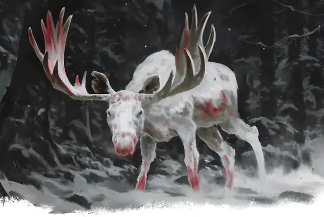

Пробуждённый белый лось
Awakened White Moose
Большой Зверь, нейтрально-злой

Класс Доспеха 11 (природный доспех)
Хиты 68 (8к10 + 24)
Скорость 40 футов
| мод | спас | ||
|---|---|---|---|
| СИЛ | 19 | +4 | +4 |
| ЛОВ | 11 | +0 | +0 |
| ТЕЛ | 16 | +3 | +3 |
| мод | спас | ||
|---|---|---|---|
| ИНТ | 10 | +0 | +0 |
| МДР | 12 | +1 | +1 |
| ХАР | 6 | −2 | −2 |
Чувства пассивное Восприятие 11
Языки Друидический
Опасность 3 (700 опыта)
Бонус мастерства +2
Особенности
Атака в броске. Если лось переместится как минимум на 20 футов по прямой к цели, а затем в том же ходу попадет по ней атакой рогами, цель получает от атаки дополнительно 9 (2к8) дробящего урон. Если цель — существо, она должна преуспеть в спасброске Силы Сл 14, иначе будет сбита с ног.
Устойчивый. Лось совершает с преимуществом спасброски Силы и Ловкости против эффектов, сбивающих его с ног.
Действия
Мультиатака. Белый лось совершает две атаки: одну Рогами и одну Копытами.
Рога. Рукопашная атака оружием: +6 к попаданию, досягаемость 5 футов, одна цель. Попадание: 13 (2к8 + 4) колющего урона.
Копыта. Рукопашная атака оружием: +6 к попаданию, досягаемость 5 футов, одна цель. Попадание: 9 (2к4 + 4) дробящего урона.
Описание
В лесу близ Глухолесья на лесорубов нападает белый лось. Лесозаготовки имеют важное значение для роста и выживания всех Десяти Городов, и Спикер Нимси Калачик заверила других спикеров, что "проблема лося" в Глухолесье будет решена в кратчайшие сроки. Для выслеживания и убийства лося был отправлен охотничий отряд, но до сих пор ему удаётся от них ускользнуть. Судя по тому, что видели охотники, их добыча умнее обычного лося, и его белую шкуру трудно заметить на снегу. Чего они не знают, так это того, что лось использует волшебное зеркало в качестве прорицательного устройства, показывающего ему, где находятся его противники.
Спикер Калачик пытается соблазнить персонажей целой корзиной печенья в виде полуросликов, надеясь, что они присоединятся к охоте на белого лося. Если же персонажи откажутся, Нимси со вздохом добавит к сделке монеты.
Белый лось – наделенный разумом зверь, служащий Равизину, тому самому злому морозному друиду, который пробудил разум у плезиозавра в озере Мер Дуалдон (см. Бремен, "Озерное чудовище"). Этот друид наложил заклинание пробуждение разума [awaken] на нескольких зверей, наделив их интеллектом и способностью речи, и использует их для шпионажа за поселениями и террора их жителей. Равизин укрывается в древней эльфийской гробнице в лесу и не успокоится, пока в лесу не останется лесорубов. Просто убийство белого лося не решит проблему Глухолесья; чтобы покончить с угрозой как поселку так и другим городам, персонажи должны помешать друиду наделить разумом ещё большее количество зверей и использовать их для нанесения вреда жителям Десяти Городов.